cellpaintr Vignette
Christof Seiler
Center of Experimental Rheumatology, Department of Rheumatology, University Hospital Zurich, University of Zurich, SwitzerlandPhatthamon Laphanuwat
Center of Experimental Rheumatology, Department of Rheumatology, University Hospital Zurich, University of Zurich, SwitzerlandCaroline Ospelt
Center of Experimental Rheumatology, Department of Rheumatology, University Hospital Zurich, University of Zurich, Switzerland2026-07-13
Source:vignettes/cellpaintr-vignette.Rmd
cellpaintr-vignette.RmdIntroduction
High-content imaging can capture detailed morphological and functional features on a single-cell level. It has been widely used in drug screen assays and for generating large-scale image datasets for machine learning models. Software such as CellProfiler extract features from high-content images for downstream analysis. CellProfiler implements a suite of traditional image processing algorithms to segment cells and extract about 1,000 morphological and texture features.
To simplify data analysis of CellProfiler features in R—many options exist in Python, such as PyCytominer—we developed an R/Bioconductor package. Our package leverages Bioconductor objects for batch correction and dimension reduction, lowering the learning curve for users familiar with single-cell RNA sequencing workflows.
Installation
Install this package.
if (!require("BiocManager", quietly = TRUE)) {
install.packages("BiocManager")
}
BiocManager::install("cellpaintr")Workflow
Load Data
Load CellProfiler output and create a
SingleCellExperiment object.
set.seed(23)
cell_file <- generate_data()
sce <- loadData(cell_file)Data Cleaning and Transformation
Prepare the data for machine learning.
# remove cells with missing features
sce <- removeNAs(sce)
# number of cells
plotCellsPerImage(sce)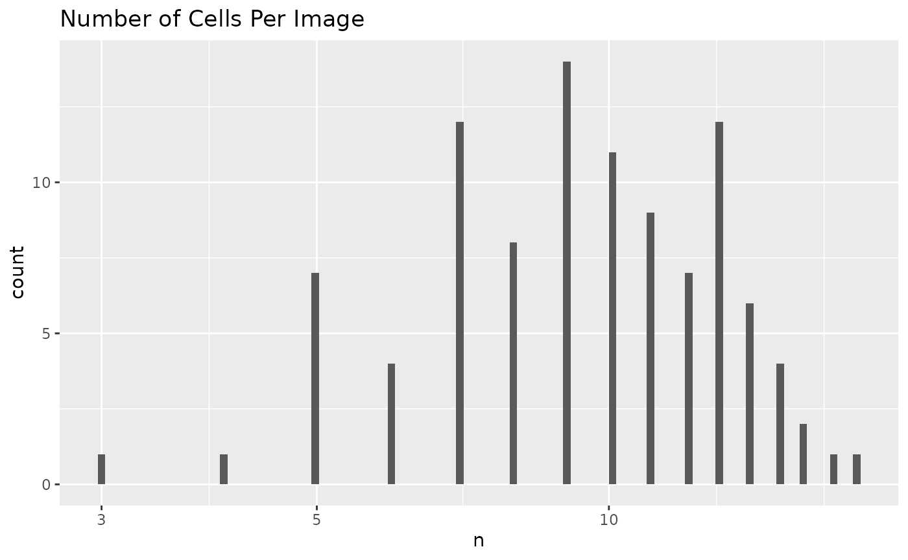
# remove outlier images
sce <- removeOutliers(sce, min = 0, max = 300)
# remove outlier cells
stats <- perCellQCMetrics(sce, assay.type = "features")
sce <- sce[, !isOutlier(stats$sum)]
# remove features with zero spread
sce <- removeLowVariance(sce, robust = TRUE)
# remove zero-inflated features
sce <- removeZeroInflation(sce)Transform non-negatives features and scale all features.
sce <- transformLogScale(sce, robust = TRUE)Unsupervised Analysis
Pseudo-bulk over images.
aggr <- scrapper::aggregateAcrossCells(
assay(sce, "tfmfeatures"),
factors = colData(sce)[, c("ImageNumber", "Drug", "Patient")]
)
sce_aggr <- SingleCellExperiment(
assays = list(sums = aggr$sums),
colData = DataFrame(aggr$combinations, ncells = aggr$counts)
)Use scater for exploratory data analysis. PCA on
pseudo-bulk features.
sce_aggr <- scater::runPCA(sce_aggr,
assay.type = "sums",
ncomponents = 10
)
scater::plotReducedDim(sce_aggr, dimred = "PCA", colour_by = "Patient")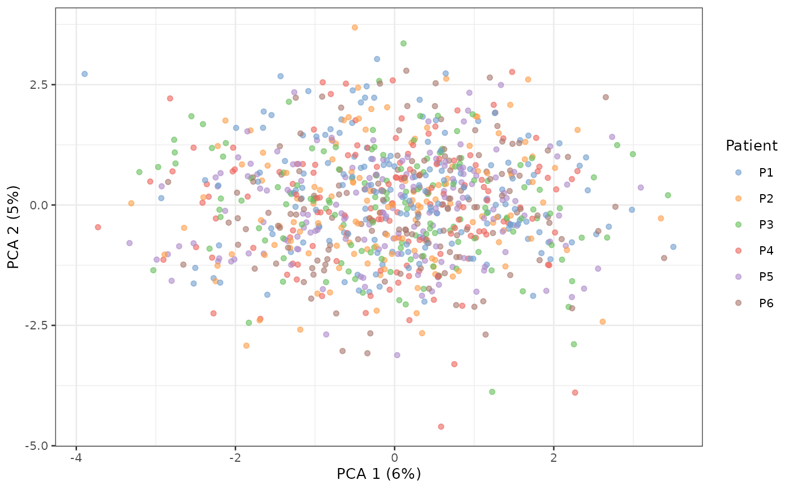
scater::plotReducedDim(sce_aggr, dimred = "PCA", colour_by = "Drug")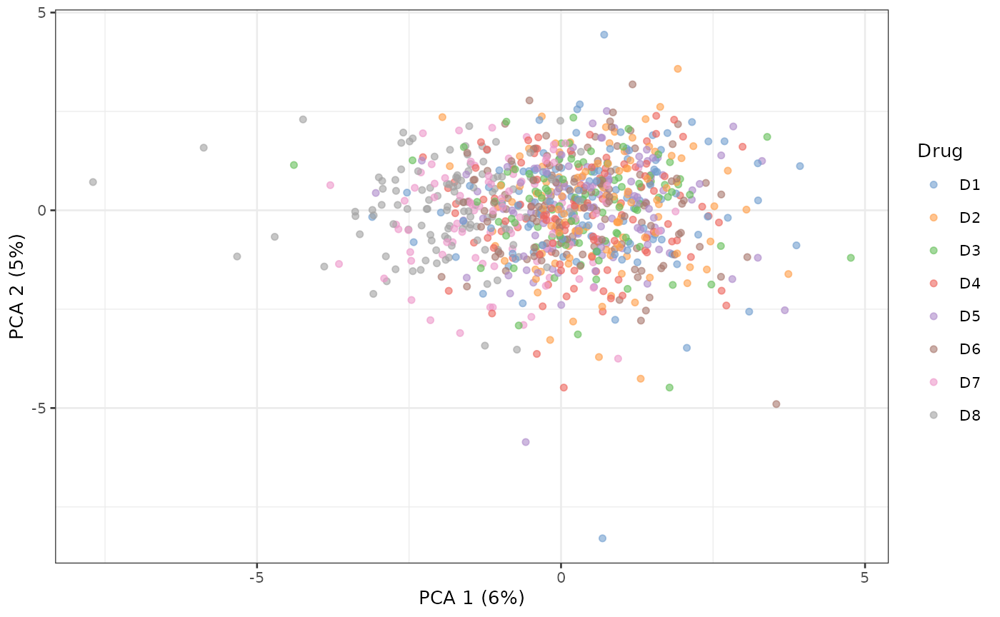
What is driving PC1?
plotPCACor(sce_aggr, filter_by = 1, assay_type = "sums")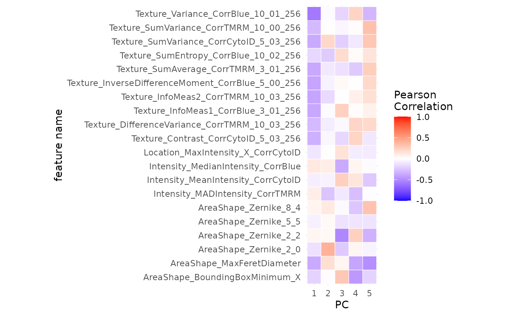
UMAP.
sce_aggr <- scater::runUMAP(sce_aggr, exprs_values = "sums")
scater::plotUMAP(sce_aggr, colour_by = "Patient")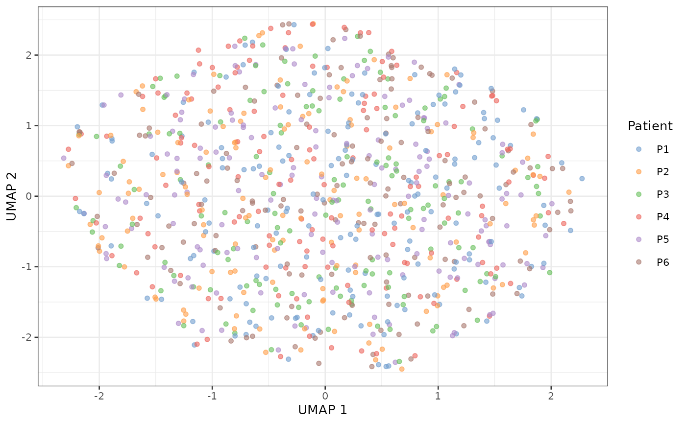
scater::plotUMAP(sce_aggr, colour_by = "Drug")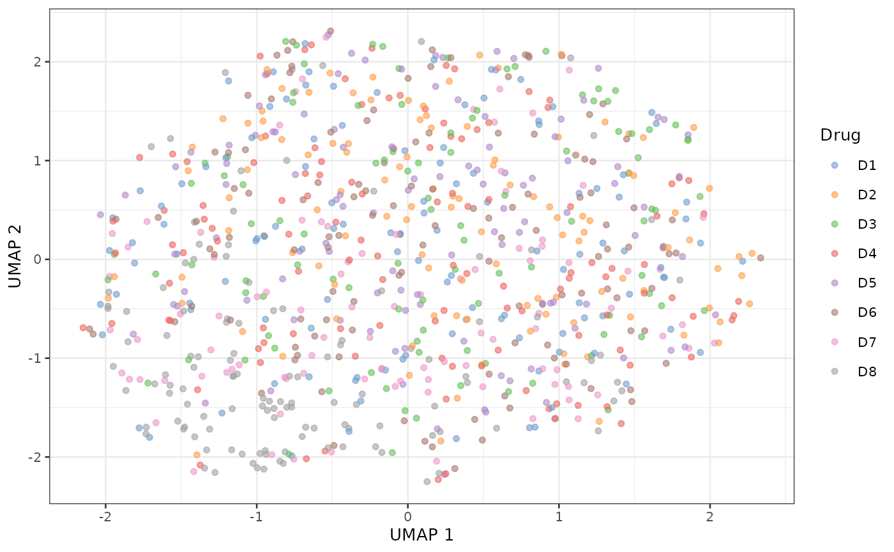
Supervised Analysis
Compare positive control to negative control.
set.seed(23)
sce$Drug <- as.factor(sce$Drug)
sce$Drug <- relevel(sce$Drug, ref = "D1")
types <- c("AreaShape", "Intensity", "Texture")
sce_single <- predictLOO(
sce,
target = "Drug", group = "Patient",
interest_level = "D7", reference_level = "D1",
types = types,
n_threads = 1
)Summarize feature subgroups in a volcano plot.
volcanoPlot(sce_single,
target = "Drug", group = "Patient",
p_cutoff = 0.05, fc_cutoff = 0.5
)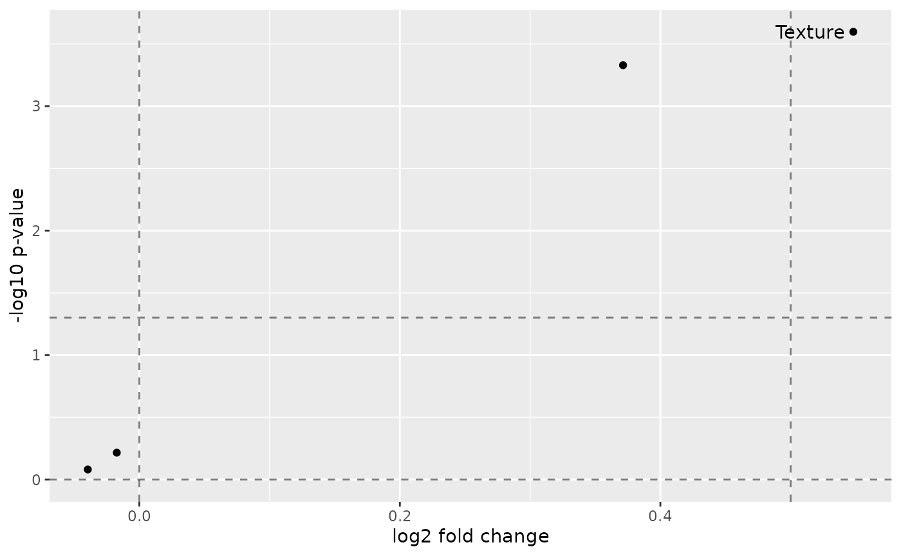
Individual scores.
plotLOO(sce_single, target = "Drug", group = "Patient")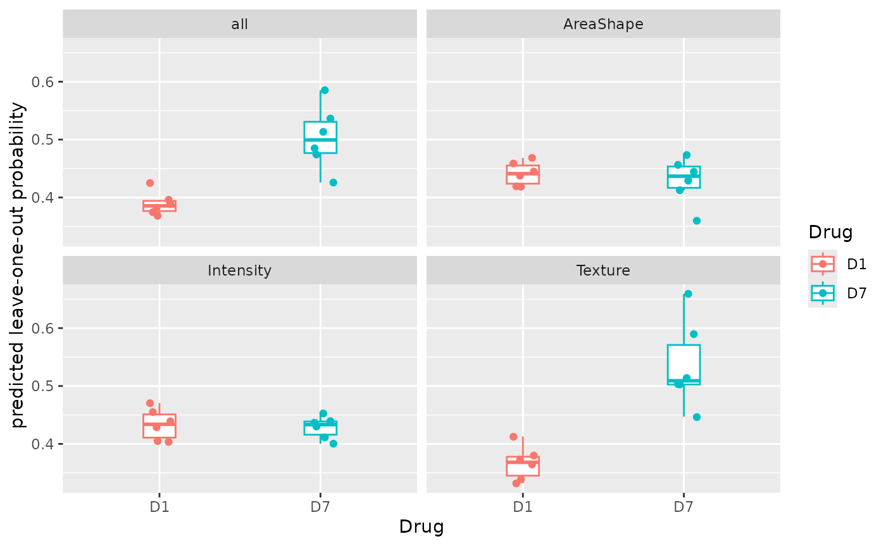
plotAUC(sce_single, target = "Drug", group = "Patient")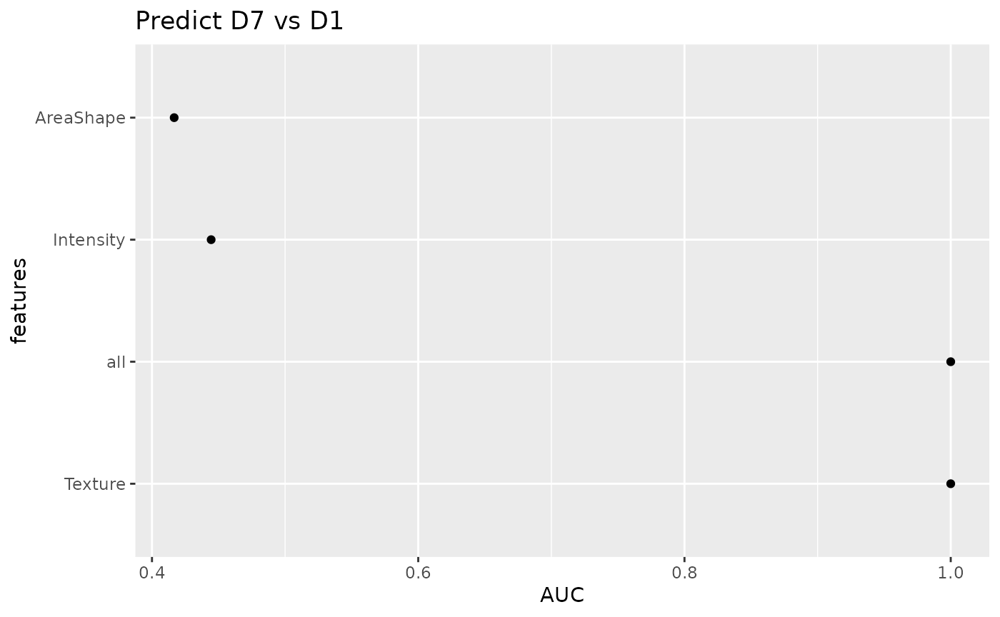
plotROC(sce_single, target = "Drug", group = "Patient")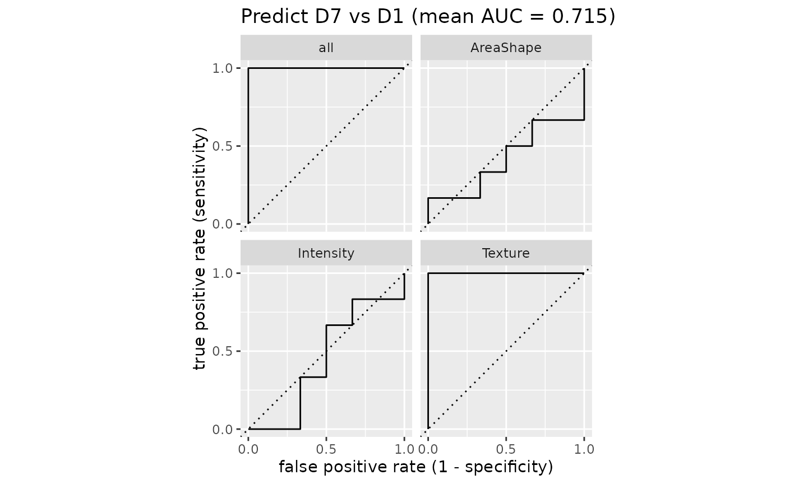
Compare a list of drugs to negative control.
set.seed(23)
reference_level <- "D1"
interest_levels <- setdiff(levels(sce$Drug), reference_level)
sce_list <- map(interest_levels, function(interest_level) {
predictLOO(
sce,
target = "Drug", group = "Patient",
interest_level = interest_level, reference_level = reference_level,
types = types,
n_threads = 1
)
}, .progress = "drug screening")Custom volcano plot for summarizing drugs faceted by features.
# prepare stats table
p_adj_cutoff <- 0.05
fc_cutoff <- 0.5
tb_stats <- lapply(sce_list, calculateStats,
target = "Drug", group = "Patient"
) |>
bind_rows() |>
mutate(pvalue_adj = p.adjust(pvalue, method = "BH")) |>
mutate(Selection = ifelse(
pvalue_adj < p_adj_cutoff & log2FoldChange > fc_cutoff,
Target, ""
))
# volcano plot
tb_stats |>
ggplot(aes(log2FoldChange, -log10(pvalue_adj), label = Selection)) +
geom_vline(xintercept = c(0, fc_cutoff), alpha = 0.5, linetype = "dashed") +
geom_hline(
yintercept = c(0, -log10(p_adj_cutoff)), alpha = 0.5,
linetype = "dashed"
) +
geom_point(aes(color = Target)) +
geom_text_repel(aes(color = Target), max.overlaps = Inf) +
xlab("log2 fold change") +
ylab("-log10 p-value (BH adjusted)") +
facet_wrap(~Feature) +
ggtitle(paste0("False Discovery Rate: ", 100 * p_adj_cutoff, "%"))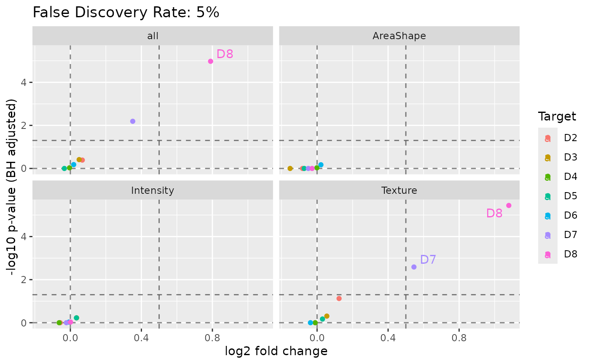
Session Info
## R version 4.5.3 (2026-03-11)
## Platform: x86_64-pc-linux-gnu
## Running under: Ubuntu 24.04.4 LTS
##
## Matrix products: default
## BLAS: /usr/lib/x86_64-linux-gnu/openblas-pthread/libblas.so.3
## LAPACK: /usr/lib/x86_64-linux-gnu/openblas-pthread/libopenblasp-r0.3.26.so; LAPACK version 3.12.0
##
## locale:
## [1] LC_CTYPE=C.UTF-8 LC_NUMERIC=C LC_TIME=C.UTF-8
## [4] LC_COLLATE=C.UTF-8 LC_MONETARY=C.UTF-8 LC_MESSAGES=C.UTF-8
## [7] LC_PAPER=C.UTF-8 LC_NAME=C LC_ADDRESS=C
## [10] LC_TELEPHONE=C LC_MEASUREMENT=C.UTF-8 LC_IDENTIFICATION=C
##
## time zone: UTC
## tzcode source: system (glibc)
##
## attached base packages:
## [1] stats4 stats graphics grDevices datasets utils methods
## [8] base
##
## other attached packages:
## [1] ggrepel_0.9.8 dplyr_1.2.1
## [3] purrr_1.2.2 scrapper_1.4.0
## [5] scater_1.38.1 ggplot2_4.0.3
## [7] scuttle_1.20.0 cellpaintr_0.3.0
## [9] SingleCellExperiment_1.32.0 SummarizedExperiment_1.40.0
## [11] Biobase_2.70.0 GenomicRanges_1.62.1
## [13] Seqinfo_1.0.0 IRanges_2.44.0
## [15] S4Vectors_0.48.1 BiocGenerics_0.56.0
## [17] generics_0.1.4 MatrixGenerics_1.22.0
## [19] matrixStats_1.5.0 BiocStyle_2.38.0
##
## loaded via a namespace (and not attached):
## [1] gridExtra_2.3.1 rlang_1.3.0 magrittr_2.0.5
## [4] furrr_0.4.0 otel_0.2.0 compiler_4.5.3
## [7] systemfonts_1.3.2 vctrs_0.7.3 stringr_1.6.0
## [10] crayon_1.5.3 pkgconfig_2.0.3 fastmap_1.2.0
## [13] XVector_0.50.0 labeling_0.4.3 rmarkdown_2.31
## [16] tzdb_0.5.0 ggbeeswarm_0.7.3 ragg_1.5.2
## [19] bit_4.6.0 xfun_0.60 cachem_1.1.0
## [22] beachmat_2.26.0 jsonlite_2.0.0 DelayedArray_0.36.1
## [25] BiocParallel_1.44.0 irlba_2.3.7 parallel_4.5.3
## [28] R6_2.6.1 bslib_0.11.0 stringi_1.8.7
## [31] rsample_1.3.2 RColorBrewer_1.1-3 ranger_0.18.0
## [34] parallelly_1.48.0 jquerylib_0.1.4 Rcpp_1.1.2
## [37] bookdown_0.47 knitr_1.51 FNN_1.1.4.1
## [40] readr_2.2.0 Matrix_1.7-4 tidyselect_1.2.1
## [43] abind_1.4-8 yaml_2.3.12 viridis_0.6.5
## [46] codetools_0.2-20 listenv_1.0.0 lattice_0.22-9
## [49] tibble_3.3.1 withr_3.0.3 S7_0.2.2
## [52] evaluate_1.0.5 future_1.70.0 desc_1.4.3
## [55] pillar_1.11.1 BiocManager_1.30.27 renv_1.1.5
## [58] vroom_1.7.1 hms_1.1.4 scales_1.4.0
## [61] globals_0.19.1 glue_1.8.1 tools_4.5.3
## [64] BiocNeighbors_2.4.0 RSpectra_0.16-2 ScaledMatrix_1.18.0
## [67] fs_2.1.0 grid_4.5.3 yardstick_1.4.0
## [70] tidyr_1.3.2 beeswarm_0.4.0 BiocSingular_1.26.1
## [73] vipor_0.4.7 cli_3.6.6 rsvd_1.0.5
## [76] textshaping_1.0.5 parsnip_1.6.0 S4Arrays_1.10.1
## [79] viridisLite_0.4.3 uwot_0.2.4 gtable_0.3.6
## [82] sass_0.4.10 digest_0.6.39 SparseArray_1.10.10
## [85] farver_2.1.2 htmltools_0.5.9 pkgdown_2.2.1
## [88] lifecycle_1.0.5 hardhat_1.4.3 sparsevctrs_0.3.6
## [91] bit64_4.8.2